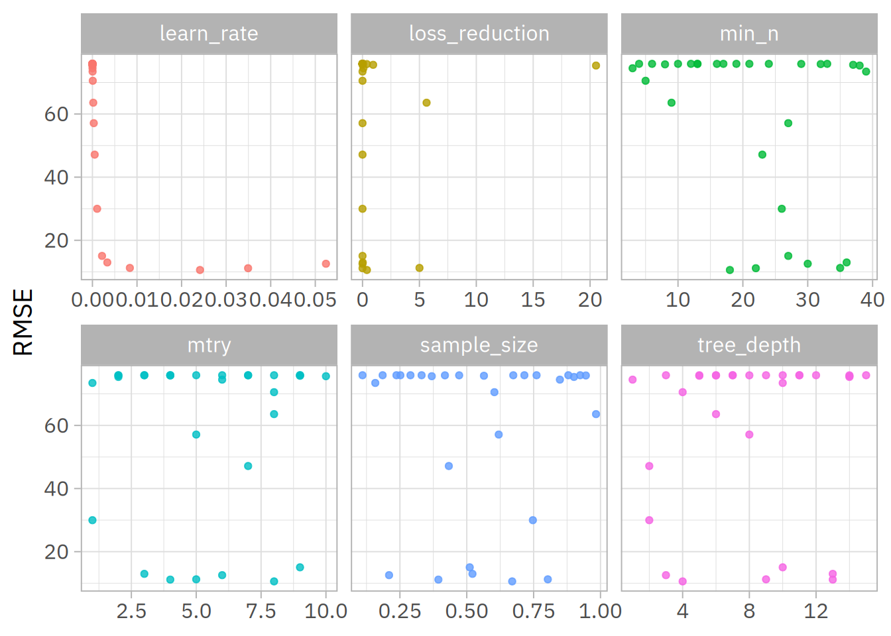
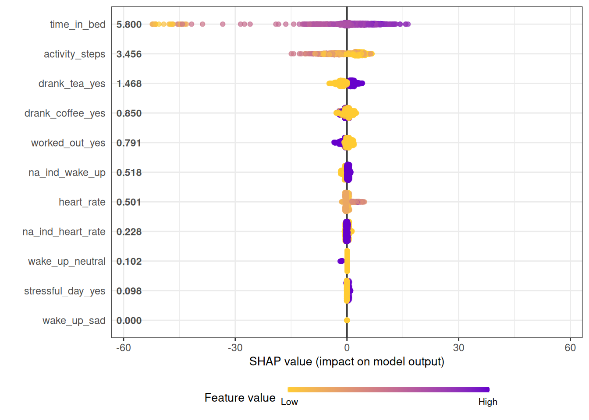
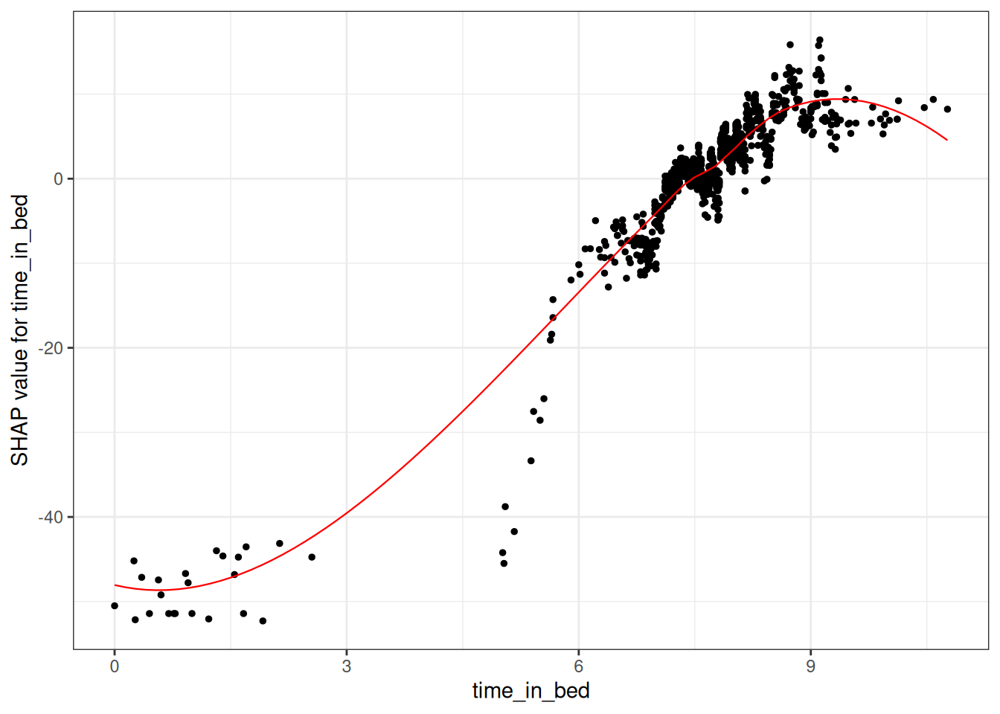
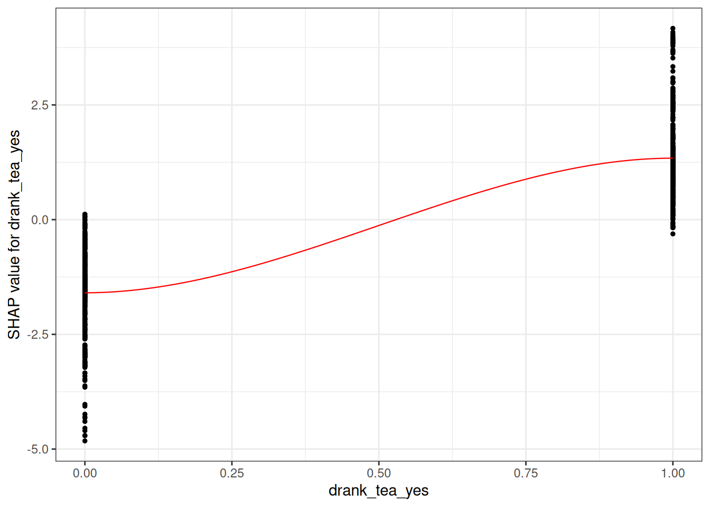

Código
# Ler dados com pacote readr
df <- readr::read_csv2("./data/sleep_data.csv")Trabalho final da disciplina PSQ 66
Bruno Braga Montezano ![]()
Ao explorar a literatura, me deparei com uma revisão sistemática que mapeou dados abertos sobre fenotipagem digital. Achei interessante e resolvi dar uma olhada no material. O artigo é intitulado Sensing Apps and Public Data Sets for Digital Phenotyping of Mental Health: Systematic Review. Na Tabela 4 deste artigo, existe um conjunto de dados sobre sono, que foram capturados pelo aplicativo Sleep Cycle de iOS. Os dados podem ser baixados no Kaggle. Após baixados, os dados foram carregados com a função read_csv2 do pacote readr.
# Ler dados com pacote readr
df <- readr::read_csv2("./data/sleep_data.csv")Após a leitura dos dados, extraí 10 amostras aleatórias para imprimir na tela a fim de exemplificar o formato dos dados. Para tal, usou-se a função slice_sample do pacote dplyr.
set.seed(1)
df |>
# Pegar 10 entradas aleatórias
dplyr::slice_sample(n = 10) |>
# Imprimir com knitr
knitr::kable(caption = "Dados brutos baixados do Kaggle ($n=887$).")| Start | End | Sleep quality | Time in bed | Wake up | Sleep Notes | Heart rate | Activity (steps) |
|---|---|---|---|---|---|---|---|
| 2017-12-19 22:05:48 | 2017-12-20 06:25:53 | 79% | 08:20:00 | NA | NA | NA | 3088 |
| 2017-06-11 22:18:20 | 2017-06-12 06:10:31 | 78% | 07:52:00 | NA | NA | NA | 6507 |
| 2015-07-20 22:01:21 | 2015-07-21 05:04:47 | 68% | 07:03:00 | :) | Drank coffee:Drank tea:Worked out | NA | 0 |
| 2016-12-08 23:32:15 | 2016-12-09 06:47:33 | 69% | 07:15:00 | NA | Drank coffee:Drank tea:Worked out | NA | 9338 |
| 2016-10-24 23:04:24 | 2016-10-25 06:25:53 | 65% | 07:21:00 | NA | Drank coffee:Drank tea:Worked out | NA | 8273 |
| 2016-03-17 22:46:35 | 2016-03-18 07:08:48 | 98% | 08:22:00 | NA | Drank coffee:Drank tea | NA | 0 |
| 2016-02-13 23:41:34 | 2016-02-14 05:11:40 | 38% | 05:30:00 | NA | Drank coffee | NA | 0 |
| 2015-10-13 22:19:10 | 2015-10-14 04:59:56 | 59% | 06:40:00 | :) | Drank coffee:Worked out | NA | 0 |
| 2016-03-29 23:12:02 | 2016-03-30 06:25:49 | 66% | 07:13:00 | NA | Drank coffee:Worked out | NA | 0 |
| 2017-03-16 22:33:05 | 2017-03-17 06:37:29 | 95% | 08:04:00 | NA | Drank coffee:Drank tea:Worked out | NA | 7887 |
Considerando a dificuldade para trabalhar com estes dados a partir de uma perspectiva de séries temporais, optei por tratar cada entrada do conjunto de dados como uma sample independente. Nesse caso, meu objetivo é elaborar um modelo de regressão para estimar a qualidade do sono em uma noite específica, a partir de dados como frequência cardíaca, humor que o sujeito acordou, número de passos durante do dia, tempo na cama, se comeu tarde, bebeu café ou chá e se o sujeito teve um dia estressante.
Para a limpeza dos dados, (1) usei a função clean_names do pacote janitor para simplificar os nomes das colunas; (2) removi as colunas de data e hora de início e fim dos tempos na cama; (3) criei uma nova variável com o tempo na cama a partir da variável original em formato de data; (4) processei a variável sleep_notes para indicadores sobre dormir tarde, tomar café, tomar chá, ter um dia estressante, realizar um treino; (5) recodifiquei algumas variáveis para labels mais compreensíveis. Para tal, usei funções dos pacotes dplyr e tidyr.
cleaned_df <- df |>
# Limpar nomes das colunas
janitor::clean_names() |>
# Remover variáveis que não serão usadas
dplyr::select(-c(start, end)) |>
# Transformar tempo na cama em caractere
dplyr::mutate(time_in_bed = as.character(time_in_bed)) |>
tidyr::separate_wider_delim(
cols = time_in_bed,
delim = ":",
names = c("hours", "minutes", "seconds")
) |>
# Transformar colunas novas em numérico
dplyr::mutate(
dplyr::across(
c(hours, minutes, seconds),
\(x) as.numeric(x)
),
# Criar coluna numérica do tempo na cama
time_in_bed = hours + (minutes / 60),
.keep = "unused"
) |>
dplyr::mutate(
# Transformar em coluna numérica
sleep_quality = readr::parse_number(sleep_quality),
# Detectar strings para criar as novas features
ate_late = stringr::str_detect(sleep_notes, "Ate late"),
drank_coffee = stringr::str_detect(sleep_notes, "Drank coffee"),
stressful_day = stringr::str_detect(sleep_notes, "Stressful day"),
worked_out = stringr::str_detect(sleep_notes, "Worked out"),
drank_tea = stringr::str_detect(sleep_notes, "Drank tea"),
# Recodificar os TRUE/FALSE das variáveis das notas
dplyr::across(
c(ate_late, drank_coffee, stressful_day, worked_out, drank_tea),
\(x) as.factor(dplyr::if_else(
x == TRUE, "yes", "no",
missing = "no"
))
),
# Recodificar o humor ao acordar
wake_up = as.factor(dplyr::case_match(
wake_up,
":(" ~ "sad",
":|" ~ "neutral",
":)" ~ "happy"
))
) |>
# Não precisamos mais das colunas abaixo
dplyr::select(-c(sleep_notes, hours, minutes, seconds))Novamente, após a limpeza, usamos a função slice_sample para imprimir 10 entradas do conjunto limpo para demonstrar o que foi realizado.
set.seed(1)
cleaned_df |>
# Pegar 10 entradas aleatórias
dplyr::slice_sample(n = 10) |>
# Imprimir com knitr
knitr::kable(caption = "Conjunto de dados após limpeza inicial ($n=887$).")| sleep_quality | wake_up | heart_rate | activity_steps | time_in_bed | ate_late | drank_coffee | stressful_day | worked_out | drank_tea |
|---|---|---|---|---|---|---|---|---|---|
| 79 | NA | NA | 3088 | 8.333333 | no | no | no | no | no |
| 78 | NA | NA | 6507 | 7.866667 | no | no | no | no | no |
| 68 | happy | NA | 0 | 7.050000 | no | yes | no | yes | yes |
| 69 | NA | NA | 9338 | 7.250000 | no | yes | no | yes | yes |
| 65 | NA | NA | 8273 | 7.350000 | no | yes | no | yes | yes |
| 98 | NA | NA | 0 | 8.366667 | no | yes | no | no | yes |
| 38 | NA | NA | 0 | 5.500000 | no | yes | no | no | no |
| 59 | happy | NA | 0 | 6.666667 | no | yes | no | yes | no |
| 66 | NA | NA | 0 | 7.216667 | no | yes | no | yes | no |
| 95 | NA | NA | 7887 | 8.066667 | no | yes | no | yes | yes |
Para o fluxo de modelagem, 75% dos dados foram separados para o conjunto de treino, e os 25% restantes para o conjunto de teste. A divisão foi estratificada para manter distribuições semelhantes do desfecho (estratificado por quartis). Esta primeira divisão foi realizada com a função initial_split do pacote rsample. A partir da base de treino, construímos um objeto com 10 folds (repartições) para rodar a validação cruzada. O processo será repetido por 10 vezes.
# Criar objeto da divisão dos conjuntos
set.seed(1)
data_split <- rsample::initial_split(
data = cleaned_df,
strata = "sleep_quality",
prop = 0.75
)
# Criar os conjuntos de treino e teste
df_train <- rsample::training(data_split)
df_test <- rsample::testing(data_split)
# Criar um objeto para k-fold CV
set.seed(1)
folds <- rsample::vfold_cv(df_train, v = 10, repeats = 10)Sim. Para o pré-processamento, foram criados indicadores para os valores ausentes de todos os preditores do modelo (através da função step_indicate_na do pacote recipes) para captar uma possível associação entre a presença de valor ausente em uma variável e o desfecho. As variáveis com nenhuma ou pouquíssima variância foram removidas por meio da função recipes::step_nzv (ver documentação para compreender o critério). Após, as variáveis preditoras foram imputadas por meio de mediana e moda com as funções step_impute_mode e step_impute_median. Por fim, as variáveis categóricas foram transformadas em dummy pois a implementação do XGBoost a ser usada aceita apenas valores de entrada numéricos.
# Criar uma receita de pré-processamento
sleep_recipe <- recipes::recipe(
sleep_quality ~ .,
# Indicar que o pré-processamento deve ser feito em cima do dado de treino
# É importante pontuar que o workflow posteriormente vai garantir que as
# medianas por exemplo da imputação sejam calculadas em cima das medidas
# dos folds de treinamento e imputadas no fold de teste, não permitindo
# o vazamento de dados
data = df_train
) |>
# Criar indicadores para missing
recipes::step_indicate_na(recipes::all_predictors()) |>
# Remover variáveis sem ou quase nenhuma variabilidade
recipes::step_nzv(recipes::all_predictors()) |>
# Imputar variáveis categóricas por moda
recipes::step_impute_mode(recipes::all_nominal_predictors()) |>
# Imputar variáveis numéricas por mediana
recipes::step_impute_median(recipes::all_numeric_predictors()) |>
# Criar dummies para as categóricas
recipes::step_dummy(recipes::all_nominal_predictors())
# Checar como o dataset pré-processado ficou
sleep_recipe |>
recipes::prep() |>
recipes::bake(new_data = NULL) |>
# Pegar 10 entradas aleatórias
dplyr::slice_sample(n = 10) |>
# Imprimir com knitr
knitr::kable(caption = "Conjunto de treino após pré-processamento (exemplo com 10 amostras).")| heart_rate | activity_steps | time_in_bed | sleep_quality | na_ind_wake_up | na_ind_heart_rate | wake_up_neutral | wake_up_sad | drank_coffee_yes | stressful_day_yes | worked_out_yes | drank_tea_yes |
|---|---|---|---|---|---|---|---|---|---|---|---|
| 59 | 0 | 7.733333 | 88 | 1 | 1 | 0 | 0 | 0 | 0 | 1 | 1 |
| 59 | 4507 | 8.783333 | 55 | 1 | 1 | 0 | 0 | 0 | 0 | 0 | 0 |
| 59 | 6631 | 7.450000 | 84 | 1 | 1 | 0 | 0 | 0 | 0 | 0 | 0 |
| 59 | 2210 | 8.316667 | 54 | 1 | 1 | 0 | 0 | 1 | 0 | 1 | 0 |
| 59 | 1898 | 8.050000 | 92 | 1 | 1 | 0 | 0 | 0 | 0 | 0 | 1 |
| 59 | 4399 | 7.983333 | 49 | 1 | 1 | 0 | 0 | 1 | 0 | 1 | 0 |
| 59 | 27 | 7.916667 | 63 | 1 | 1 | 0 | 0 | 0 | 0 | 0 | 0 |
| 59 | 6284 | 7.600000 | 59 | 1 | 1 | 0 | 0 | 1 | 0 | 1 | 1 |
| 59 | 0 | 8.550000 | 81 | 1 | 1 | 0 | 0 | 0 | 0 | 0 | 1 |
| 59 | 0 | 6.650000 | 65 | 1 | 1 | 0 | 0 | 1 | 0 | 1 | 0 |
Para resolver esta tarefa, optou-se por um XGBoost para resolver o problema. Talvez modelos menos flexíveis pudessem ser mais adequados, mas por se tratar de uma tarefa de casa simulada, não viu-se problema em realizar esta opção.
Os seguintes parâmetros do modelo foram tunados: mtry, min_n, tree_depth, loss_reduction, learn_rate, e sample_size. O número de árvores do modelo foi fixado em 1.000 (trees). Segue abaixo o código onde o algoritmo é declarado.
# Pegar n de núcleos do CPU
cores <- parallel::detectCores()
# Declarar o modelo de XGBoost e quais hiperparâmetros serão tunados
xgb_spec <- parsnip::boost_tree(
# mtry: Número de preditores a serem sorteados em cada split
mtry = tune::tune(),
# trees: Número de árvores (fixado em 1k)
trees = 1000,
# min_n: Número mínimo de data points em um nó para continuar dividindo
min_n = tune::tune(),
# tree_depth: Profundidade máxima da árvore (# de splits)
tree_depth = tune::tune(),
# loss_reduction: Número para redução da função de custo necessário para
# seguir dividindo
loss_reduction = tune::tune(),
# learn_rate: Taxa em que o algoritmo vai modificar de i-para-i
learn_rate = tune::tune(),
# Quantidade de dados exposta ao ajuste
sample_size = tune::tune()
) |>
parsnip::set_mode("regression") |>
parsnip::set_engine("xgboost")Após a declaração do algoritmo, realiza-se a criação da grade de hiperparâmetros, onde são elaboradas 30 combinações diferentes de parâmetros para serem testados no 10-fold CV repetido por 10 vezes.
set.seed(1)
# Criar grid de hiperparâmetros
# Usando métodos de preenchimento de espaço
xgb_grid <- dials::grid_latin_hypercube(
dials::tree_depth(),
dials::min_n(),
dials::loss_reduction(),
# Para entender os defaults do sample_prop, ver documentação
sample_size = dials::sample_prop(),
dials::finalize(dials::mtry(), df_train),
dials::learn_rate(),
size = 30
)Por fim, juntei a receita de pré-processamento e o modelo especificado em um objeto de workflow para ajustar os modelos da validação posteriormente. Para rodar a validação, usou a função tune::tune_grid.
xgb_wf <- workflows::workflow() |>
# Adicionar pré-processamento
workflows::add_recipe(sleep_recipe) |>
# Adicionar declaração do modelo
workflows::add_model(xgb_spec)
doParallel::registerDoParallel()
set.seed(1)
# Ajustar modelos da validação cruzada
xgb_res <- tune::tune_grid(
# Objeto de workflow criado acima
object = xgb_wf,
# 10-fold cv repetido por 10 vezes criado anteriormente
resamples = folds,
# Grid criado com a função `grid_latin_hypercube`
grid = xgb_grid,
# Indicar alguns argumentos para salvar predições, permitir
# paralelização e ser verboso
control = tune::control_grid(
save_pred = TRUE,
allow_par = TRUE,
verbose = TRUE
)
)Para verificar os resultados, usei algumas funções como tune::collect_metrics e tune::show_best para checar quais foram as combinações de hiperparâmetros que melhor performaram durante a validação usando o root mean squared error (RMSE) como critério para avaliação do modelo.
xgb_res
tune::collect_metrics(xgb_res)
tune::show_best(xgb_res, "rmse")Abaixo, foi criado um gráfico para demonstrar a relação os valores de cada hiperparâmetro tunado e o valor do RMSE. O gráfico foi criado com o pacote ggplot2 e os pacotes dplyr e tidyr foram usados para manipulação dos dados.
xgb_res |>
tune::collect_metrics() |>
dplyr::filter(.metric == "rmse") |>
dplyr::select(mean, mtry:sample_size) |>
tidyr::pivot_longer(mtry:sample_size,
values_to = "value",
names_to = "parameter"
) |>
ggplot2::ggplot(ggplot2::aes(value, mean, color = parameter)) +
ggplot2::geom_point(alpha = 0.8, show.legend = FALSE) +
ggplot2::facet_wrap(~parameter, scales = "free_x") +
ggplot2::theme_light(15, "IBM Plex Sans") +
ggplot2::labs(x = NULL, y = "RMSE")
best_rmse <- tune::select_best(xgb_res, "rmse")No chunk de código acima, selecionei a melhor combinação de hiperparâmetros pelo critério do menor RMSE.
Por fim, no código abaixo eu finalizo o fluxo (workflow) para usar os melhores hiperparâmetros encontrados na validação no meu objeto do modelo de XGBoost (função tune::finalize_workflow). Então ajusto o modelo final com a função tune::last_fit, onde treino/ajusto o modelo no conjunto de treino e estimo as métricas de desempenho no conjunto de testes.
# Atualizar os hiperparâmetros para os melhores encontrados na CV
final_xgb <- tune::finalize_workflow(
xgb_wf,
best_rmse
)
# Ajustar o modelo final no conjunto de treino e estimar métricas no teste
final_fit <- tune::last_fit(
final_xgb,
data_split
)Para interpretar o modelo, usei SHAP values. O pacote SHAPforxgboost foi usado para estimar os valores e plotar em gráficos os resultados correspondentes. De acordo com os gráficos abaixo, os resultados sugerem que o tempo gasto na cama [time_in_bed] (quanto mais tempo na cama, melhor a qualidade do sono) é a variável mais influente para as predições do modelo, seguida por passos no dia [activity_steps] (quanto mais, pior a qualidade do sono). Tomar chá [drank_tea_yes] parece ter uma influência “positiva” no desfecho e tomar café [drink_coffee_yes], na direção contrária, um efeito negativo na qualidade do sono.
Nos gráficos de dependência vemos que quanto maior o tempo na cama, maior a qualidade de sono. Mas o interessante é ver que parece que tempos curtos gastos na cama apresentam um tamanho de efeito maior na predição de uma má/baixa qualidade do sono do que na direção de uma potencial influência positiva. Já no plot do beber chá, vemos uma influência de tamanho semelhante em ambas direções.
shap_long <- SHAPforxgboost::shap.prep(
xgb_model = final_fit |>
hardhat::extract_fit_engine(),
X_train = sleep_recipe |>
recipes::prep() |>
recipes::bake(new_data = final_fit$splits[[1]]$data) |>
dplyr::select(-sleep_quality) |>
as.matrix()
)
library(SHAPforxgboost)
SHAPforxgboost::shap.plot.summary(shap_long)
SHAPforxgboost::shap.plot.dependence(data_long = shap_long,
x = "time_in_bed")
SHAPforxgboost::shap.plot.dependence(data_long = shap_long,
x = "drank_tea_yes")
sessioninfo::session_info()─ Session info ───────────────────────────────────────────────────────────────
setting value
version R version 4.3.2 (2023-10-31)
os Arch Linux
system x86_64, linux-gnu
ui X11
language (EN)
collate en_US.UTF-8
ctype en_US.UTF-8
tz America/Sao_Paulo
date 2023-12-07
pandoc 3.1.9 @ /usr/bin/ (via rmarkdown)
─ Packages ───────────────────────────────────────────────────────────────────
package * version date (UTC) lib source
abind 1.4-5 2016-07-21 [1] CRAN (R 4.2.2)
backports 1.4.1 2021-12-13 [1] CRAN (R 4.2.2)
BBmisc 1.13 2022-09-29 [1] CRAN (R 4.2.2)
broom 1.0.5 2023-06-09 [1] CRAN (R 4.3.0)
car 3.1-2 2023-03-30 [1] CRAN (R 4.2.3)
carData 3.0-5 2022-01-06 [1] CRAN (R 4.2.2)
checkmate 2.3.0 2023-10-25 [1] CRAN (R 4.3.1)
class 7.3-22 2023-05-03 [2] CRAN (R 4.3.2)
cli 3.6.1 2023-03-23 [1] CRAN (R 4.2.3)
codetools 0.2-19 2023-02-01 [2] CRAN (R 4.3.2)
colorspace 2.1-0 2023-01-23 [1] CRAN (R 4.3.1)
data.table 1.14.8 2023-02-17 [1] CRAN (R 4.2.2)
digest 0.6.33 2023-07-07 [1] CRAN (R 4.3.1)
dplyr * 1.1.4 2023-11-17 [1] CRAN (R 4.3.2)
evaluate 0.23 2023-11-01 [1] CRAN (R 4.3.2)
fansi 1.0.5 2023-10-08 [1] CRAN (R 4.3.1)
farver 2.1.1 2022-07-06 [1] CRAN (R 4.2.2)
fastmap 1.1.1 2023-02-24 [1] CRAN (R 4.2.2)
future 1.33.0 2023-07-01 [1] CRAN (R 4.3.1)
future.apply 1.11.0 2023-05-21 [1] CRAN (R 4.3.0)
generics 0.1.3 2022-07-05 [1] CRAN (R 4.2.2)
ggforce 0.4.1 2022-10-04 [1] CRAN (R 4.2.2)
ggplot2 3.4.4 2023-10-12 [1] CRAN (R 4.3.1)
ggpubr 0.6.0 2023-02-10 [1] CRAN (R 4.2.2)
ggsignif 0.6.4 2022-10-13 [1] CRAN (R 4.2.3)
globals 0.16.2 2022-11-21 [1] CRAN (R 4.2.2)
glue 1.6.2 2022-02-24 [1] CRAN (R 4.2.2)
gower 1.0.1 2022-12-22 [1] CRAN (R 4.2.2)
gtable 0.3.4 2023-08-21 [1] CRAN (R 4.3.1)
hardhat 1.3.0 2023-03-30 [1] CRAN (R 4.2.3)
htmltools 0.5.7 2023-11-03 [1] CRAN (R 4.3.2)
htmlwidgets 1.6.3 2023-11-22 [1] CRAN (R 4.3.2)
ipred 0.9-14 2023-03-09 [1] CRAN (R 4.2.2)
jsonlite 1.8.7 2023-06-29 [1] CRAN (R 4.3.1)
knitr 1.45 2023-10-30 [1] CRAN (R 4.3.1)
lattice 0.22-5 2023-10-24 [2] CRAN (R 4.3.2)
lava 1.7.3 2023-11-04 [1] CRAN (R 4.3.2)
lifecycle 1.0.4 2023-11-07 [1] CRAN (R 4.3.2)
listenv 0.9.0 2022-12-16 [1] CRAN (R 4.2.2)
lubridate 1.9.3 2023-09-27 [1] CRAN (R 4.3.1)
magrittr 2.0.3 2022-03-30 [1] CRAN (R 4.2.2)
MASS 7.3-60 2023-05-04 [1] CRAN (R 4.3.0)
Matrix 1.6-3 2023-11-14 [1] CRAN (R 4.3.2)
munsell 0.5.0 2018-06-12 [1] CRAN (R 4.2.2)
nnet 7.3-19 2023-05-03 [2] CRAN (R 4.3.2)
parallelly 1.36.0 2023-05-26 [1] CRAN (R 4.3.0)
parsnip * 1.1.1 2023-08-17 [1] CRAN (R 4.3.1)
pillar 1.9.0 2023-03-22 [1] CRAN (R 4.2.3)
pkgconfig 2.0.3 2019-09-22 [1] CRAN (R 4.2.2)
polyclip 1.10-6 2023-09-27 [1] CRAN (R 4.3.1)
prodlim 2023.08.28 2023-08-28 [1] CRAN (R 4.3.1)
purrr 1.0.2 2023-08-10 [1] CRAN (R 4.3.1)
R6 2.5.1 2021-08-19 [1] CRAN (R 4.2.2)
RColorBrewer 1.1-3 2022-04-03 [1] CRAN (R 4.2.2)
Rcpp 1.0.11 2023-07-06 [1] CRAN (R 4.3.1)
recipes * 1.0.8 2023-08-25 [1] CRAN (R 4.3.1)
rlang 1.1.2 2023-11-04 [1] CRAN (R 4.3.2)
rmarkdown 2.25 2023-09-18 [1] CRAN (R 4.3.1)
rpart 4.1.21 2023-10-09 [1] CRAN (R 4.3.1)
rstatix 0.7.2 2023-02-01 [1] CRAN (R 4.2.2)
scales 1.3.0 2023-11-28 [1] CRAN (R 4.3.2)
sessioninfo 1.2.2 2021-12-06 [1] CRAN (R 4.2.2)
SHAPforxgboost * 0.1.3 2023-05-29 [1] CRAN (R 4.3.0)
survival 3.5-7 2023-08-14 [1] CRAN (R 4.3.1)
tibble 3.2.1 2023-03-20 [1] CRAN (R 4.2.3)
tidyr 1.3.0 2023-01-24 [1] CRAN (R 4.2.2)
tidyselect 1.2.0 2022-10-10 [1] CRAN (R 4.2.2)
timechange 0.2.0 2023-01-11 [1] CRAN (R 4.2.2)
timeDate 4022.108 2023-01-07 [1] CRAN (R 4.2.2)
tweenr 2.0.2 2022-09-06 [1] CRAN (R 4.2.2)
utf8 1.2.4 2023-10-22 [1] CRAN (R 4.3.1)
vctrs 0.6.4 2023-10-12 [1] CRAN (R 4.3.1)
withr 2.5.2 2023-10-30 [1] CRAN (R 4.3.1)
xfun 0.41 2023-11-01 [1] CRAN (R 4.3.2)
xgboost * 1.7.5.1 2023-03-30 [1] CRAN (R 4.2.3)
yaml 2.3.7 2023-01-23 [1] CRAN (R 4.2.2)
[1] /home/bruno/.local/share/r
[2] /usr/lib/R/library
──────────────────────────────────────────────────────────────────────────────